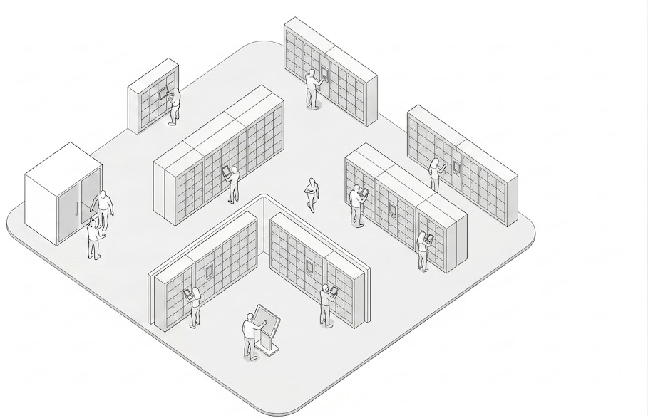
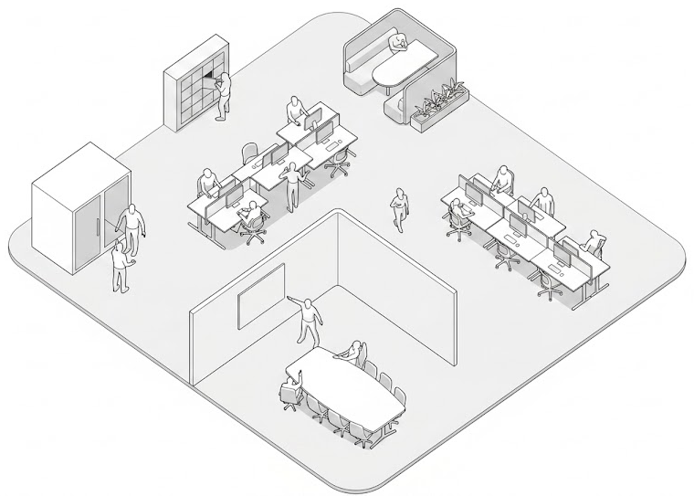

Choose a Product to Configure

Smartalock is a locker management system. This step-by-step wizard walks you through configuring it for your site.

Floorsense is a desk booking and workplace management system. This step-by-step wizard walks you through configuring it for your site.